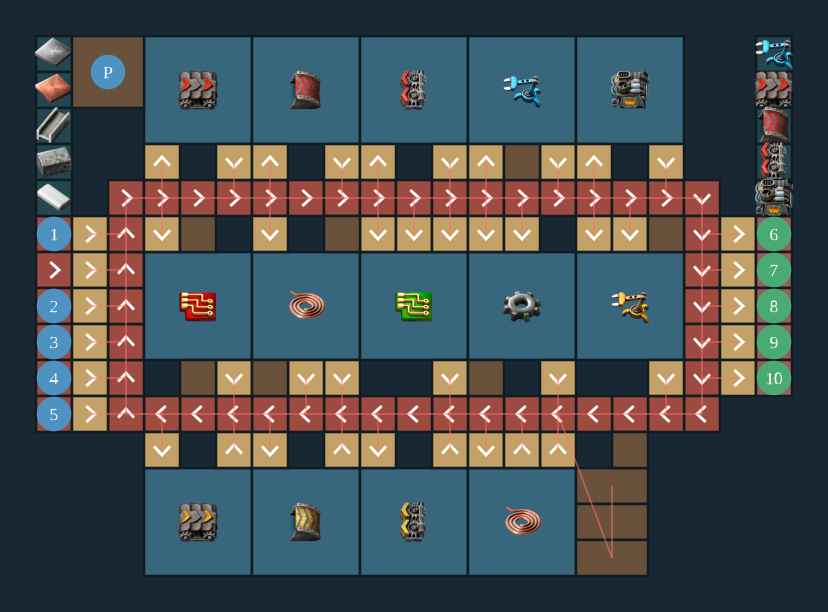

Long game flight plans and strategies
Compact expansion workshop
Blue fast inserters, red transport belts, red underground belts, red splitters and electric furnaces. Five material entrances on the west; five labeled passive-provider outputs on the east. Intermediate circuits, gears and yellow transport parts are made inside.
Download blueprint string Open main blueprint library Full-size labeled layout

Connect the five inputs
- Iron plate — west entrance, blueprint coordinates (-2.5, 1.5).
- Copper plate — west entrance, blueprint coordinates (-2.5, 3.5).
- Steel plate — west entrance, blueprint coordinates (-2.5, 4.5).
- Stone brick — west entrance, blueprint coordinates (-2.5, 5.5).
- Plastic bar — west entrance, blueprint coordinates (-2.5, 6.5).
Feed each material on its own belt. Only one entrance is needed for each material. The iron entrance branches internally to two admission inserters. Connect external electricity at P. No raw ores, coal, oil, gas or fluid pipe is required. Plastic is supplied finished.
Collect on the east side
- Fast inserter — one passive-provider chest.
- Fast transport belt — one passive-provider chest.
- Fast underground belt — one passive-provider chest.
- Fast splitter — one passive-provider chest.
- Electric furnace — one passive-provider chest.
Robots can collect from the passive providers once your logistic network covers them. Belts or manual collection also work. Each output chest is limited to one stack; keep the limits initially. This is an on-demand building workshop, rather than a dedicated high-throughput belt factory.
Measured simultaneous production
| Product | Steady measurement | After full storage |
|---|---|---|
| Fast inserter | 8.4/min | 7.6/min |
| Fast transport belt | 5.7/min | 5.8/min |
| Fast underground belt | 1.6/min | 1.2/min |
| Fast splitter | 1.4/min | 1.4/min |
| Electric furnace | 1.5/min | 1.6/min |
All five outputs were collected together. Native Factorio 2.1.24, normal quality, 10-minute warmup and 10-minute measurement, then 5 minutes of full output storage, 5 minutes settling and a 5-minute recovery measurement. Every configured recipe produced, every required exterior feed reached a productive consumer, and all powered entities shared the saved grid. Exact-hash native report.
Why it stays compact
- Five machines sit inside the loop, using its return belt for their outputs. Five sit above it and four below it; there is no separate long input bus or output bus.
- One compact ring serves all materials. Its straight sections have machine or port connections, so underground replacements would remove needed pickup/drop tiles.
- Both cable assemblers have two output inserters. Advanced circuits pick up cable before green circuits, protecting furnace production.
- The three arithmetic combinators rotate the red-transport ingredient pickups through 10-second windows. Keep them: they prevent underground belts from taking all the gears.
- Red circuit wires stock-limit external inputs and intermediate outputs. Leave the belt reader in whole-belt hold mode and preserve all filters, stock limits and wires.
Automation 2, Logistics 2, Fast inserters, Advanced electronics, Advanced material processing 2, Circuit network, Electric energy distribution 1 and Logistic robotics for passive-provider chests, including their prerequisites. Logistic system/requester-chest research is not needed to supply this belt-fed workshop. Displays are labels, not ingredient inventories.